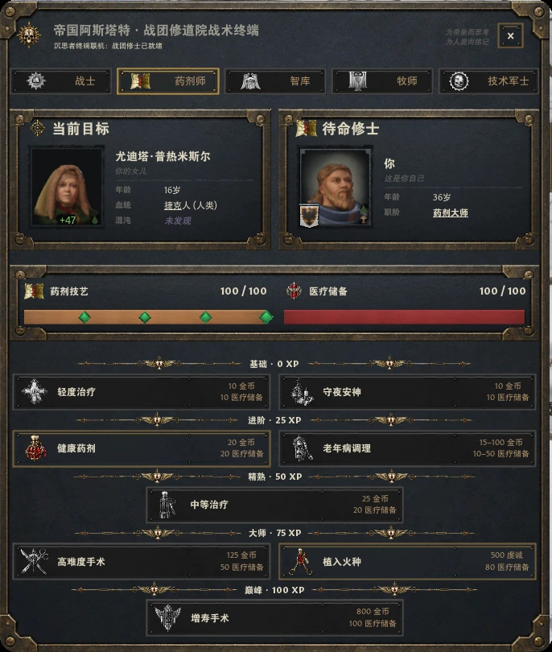
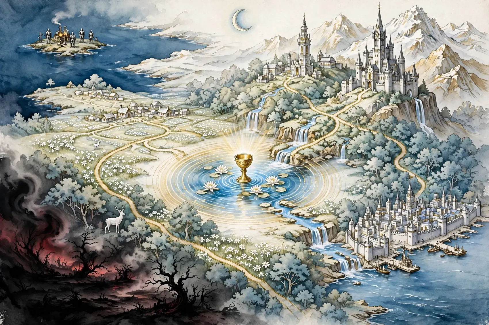

圣泉悬圃Xuanpu Sanctuary
取得核心，建设仙女之泉、宝物库和学院，进入各项玩法。Give your growing power somewhere to call home.
现行主模组Released core modTHE SACRED SPRING · COMPENDIUM
三十五篇真正独立的专题：湖神的馈赠、王朝与骑士、宝物和军团。先读故事，再展开与源码核对的操作规则。Thirty-five separately addressable feature articles: the Lady's gifts, dynasties, knighthood, artifacts and legions. Read the narrative first, then expand the reviewed rules.
文案基线：主模组 V3.1.6；龙角另外参考 V3.1.6.1 分支。混沌仍是独立测试候选，骑士王尚未开放。GitHub 更新不等于 Muse 线上发布。Content baseline: V3.1.6 core; horns refer separately to V3.1.6.1. Chaos remains an independent test candidate; Knight Sovereign coronation is not released. GitHub does not automatically publish to Muse.
取得核心，建设仙女之泉、宝物库和学院，进入各项玩法。Give your growing power somewhere to call home.
现行主模组Released core mod为宫廷寻找谋臣、勇士、战争侍女与祭司。An offering begins a fellowship.
现行主模组Released core mod
让经历、传承与初泉考验共同影响人物成长。A blessing changes a person—and the dynasty that follows.
现行主模组Released core mod
按游戏内年份续约，领取七道封印的回礼。The Lady remembers. Keep your part of the covenant.
现行主模组Released core mod
建设学院、任命校长，陪伴学生入学、考核与毕业。Turn a young life’s promise into a dynasty’s future.
现行主模组Released core mod从册封到出征，再到审判与继承，管理具体的骑士成员。A knight’s legend extends beyond the charge.
现行主模组Released core mod
任命泉水剑术大师与学院校长，把人才转化为持续服务。Give the right person a role where a gift becomes useful.
现行主模组Released core mod
培养罕见的巨型人类，以骑士参战和强敌战绩推进成长。Look beyond great size to the person still growing within.
现行主模组Released core mod
偶遇、收养、命名与日常陪伴，也有继承和告别。Even a legend has room for an otter.
现行主模组Released core mod现有老年病调理可用；沐汤、专用决斗与勋章另列计划。Separate what is playable today from what is imagined for tomorrow.
现行照料 / 部分规划Available care / Some planned抽取、挑选和回收宝物，再为人物安排装备。Some gifts are held in the hand; others change what that hand can do.
现行主模组Released core mod添加、替换、锁定与升华词缀，重新安排宝物用途。Renew a relic—and understand the price of failure.
现行主模组Released core mod收集不同种类、实际装备成套，再检阅整备。A weapon changes a fight; a set of arms changes preparation.
现行主模组Released core mod通过智库占卜，理解正逆位的收益、代价与持续时间。A glimpse of possibility is not a promise.
现行主模组Released core mod
一轮十张，逐张揭晓游戏内资源、牌面与稀有奖励。Before the reveal, the water keeps its answer.
现行主模组Released core mod
军团身份、五种职业、升格与服役，构成完整的修士体系。More than human strength, given someone to protect.
现行主模组Released core mod
经营家族志向，发展文治与军备，面对战后的京观选择。A distant inheritance finds a place beside the spring.
现行主模组Released core mod
承接委托、亲自旅行、作出选择，再完成交接与结案。Escort a traveler. Settle a dispute. Make protection tangible.
现行主模组Released core mod迎战强敌、训练后来者，把个人恩典投入援军、伤者与同伴的成长。Face formidable opponents, teach companions and invest personal Grace in aid, musters and the next generation.
现行阿斯塔特职业Released Astartes role揭开秘密、建立牵制，或把灵能用于支援、诅咒与致命打击。Discover secrets, create leverage and use psychic power for support, curses or lethal strikes.
现行阿斯塔特职业Released Astartes role安装义体、配置模块、维护机仆；更深的改造通向原铸化与机械飞升。Install prosthetics, specialise characters and maintain servitors; advanced paths lead toward Primaris conversion and Mechanical Ascension.
现行阿斯塔特职业Released Astartes role逐项处理性格、应对习惯与罪名特质，并为所持公国的法理土地举行赐福仪式。Treat specified traits, coping habits and criminal burdens, or bless eligible duchies.
现行阿斯塔特职业Released Astartes role
诊治疾病与创伤、减轻压力和老年病、延长寿命；另有军团火种回收与植入服务。Treat specific illnesses and wounds, support health and ageing, and perform separate gene-seed recovery and implantation duties.
现行阿斯塔特职业Released Astartes role
寻找联系人、接受引介，再决定保持秘密还是公开信奉。Faith may be hidden; choices still have consequences.
独立扩展 · 测试中Independent expansion · Testing分别管理周期大军与整套入侵机制，选择世界承受的压力。Preparation, response and outcome are different stages.
独立扩展 · 测试中Independent expansion · Testing用战场事迹争取邀约，区分冠军身份与血潮宣战资格。Battle-earned power does not remove every condition.
独立扩展 · 测试中Independent expansion · Testing查看县份污染，派遣合资格宫廷祭司处理受侵蚀的土地。Corruption marks the land. Cleansing must reach it.
独立扩展 · 测试中Independent expansion · Testing区分信仰标记、特质、操作图标与事件背景的用途。Art can identify a power; it cannot prove a finished mechanic.
独立扩展 · 测试中Independent expansion · Testing独立外观扩展，让军团身份在甲胄、头盔与人物轮廓上可见。The main mod defines the duty; the add-on changes its appearance.
独立外观工程Appearance add-on分清实际医生、个人储备和火种权属，完成治疗与连续手术。The same hands tend the wounded and safeguard tomorrow.
现行主模组Released core mod已经退役的主模组机制，只供理解旧攻略与版本历史。Keep the old chapter, and show where the story moved.
历史归档 · 已退役Retired historical archive按实际模组组合选择补丁，备份后应用，保留撤销方法。The richer the combination, the clearer its boundaries must be.
文档与支持Guide & support先记录版本组合、备份存档，再核对适配与补丁。Check what changed before beginning the next journey.
文档与支持Guide & support
区分主模组、混沌扩展、外观扩展与历史资料。Released, candidate, historical and planned—clearly distinguished.
文档与支持Guide & support从版本、资格、规则开关与内容包归属排查问题。Turn real questions into answers people can find.
文档与支持Guide & support